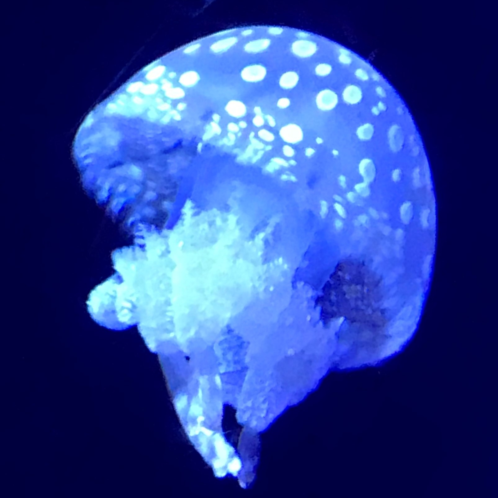

favorite
好きなものを布教していく～！
Yutosa's room
ユートサの部屋
profile

2001年生まれの情報系B4。医用画像工学研究室所属。吹奏楽部・大学祭実行委員会など。
吹奏楽部ではトランペットをやっていました。
大学祭実行委員会で3年次にシステム局局長を務めたことを機にフロントエンドの勉強を始めたり。
データサイエンスや機械学習系にも興味あり。Kaggleもはじめたいな...
favorite
好きなものを布教していく～！
music
小学校は金管バンド部、中・高・大とずっと吹奏楽部でした。 お気に入りの吹奏楽曲の動画を貼っておきます。 いっぱいあって紹介しきれない...
流行りの曲もボカロも聞きます。
大学入ってからはThee Michelle Gun Elephantとか宮本浩次にハマっていた時期も。
food
食べることが好きで、ラーメン屋さんや喫茶店巡ったりしてます。
飯テロ画像を載せちゃう。


something
作ったものとか。
広島市立大学第29回大学祭 (ichidaisai.com)
(2022年春～秋)
自分もコード書きましたが、主にPM的な立ち位置でやりました。
同じ部署の仲間と作りました。
html/css/javascriptの勉強を始めて、初めて一般の人に見てもらいました。
timetable
(2022年12月～2023年2月)
時間割作成アプリです。
html/css/javascriptで作りました。練習作です。
このホームページ
大学祭のホームページ作ったりして、html/css/javascriptに慣れたけど実際に自分で公開までやったことないな～と思って作りました。
少しFigma使ってみたり、jQuery使ってみたりしました。